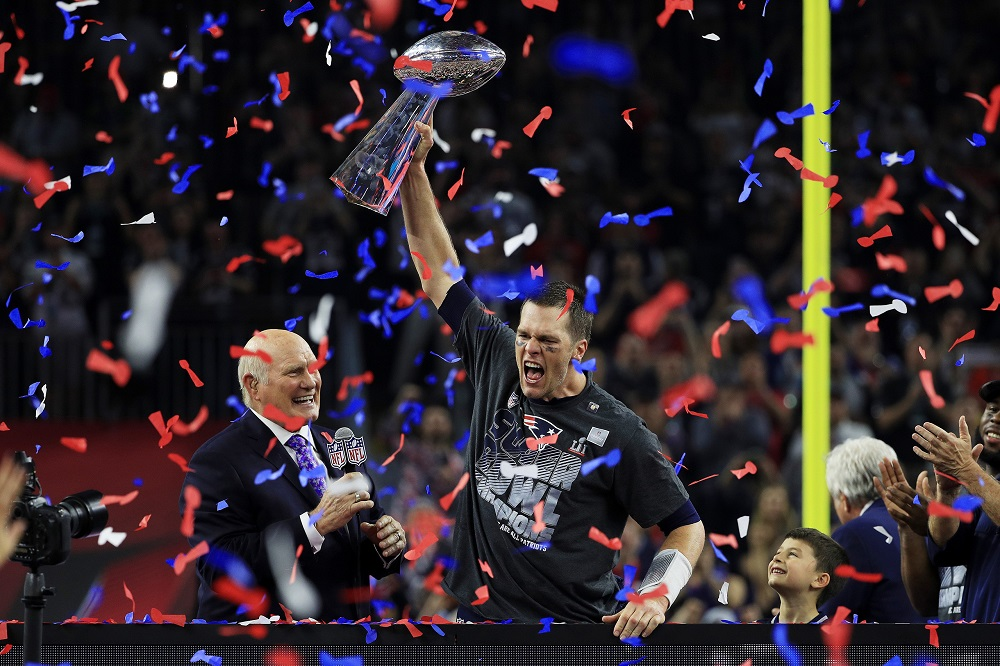
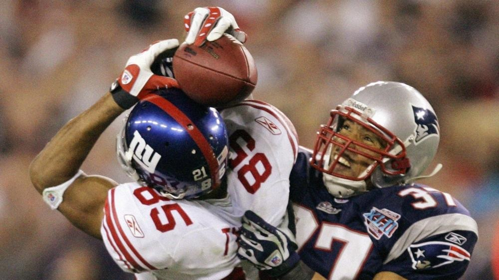
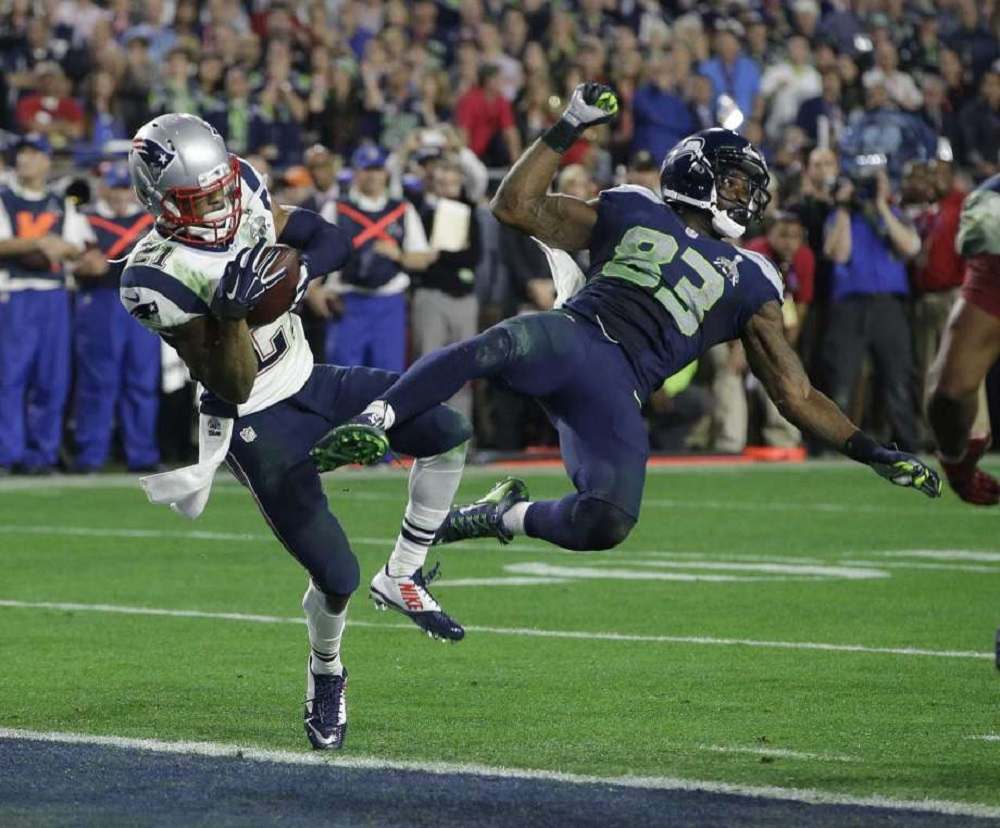

Greatest Moments in Football History
Since the turn of the century Football has seen some of the greatest games, achievenments, and plays in the world of sports.
#1
Patriots complete largest comeback in Super Bowl History
With Tom Brady, and the New England Patriots, down 28-3 with only 19 minuets left in the game no one could have predict what happened next.

#2
David Tyree's Helmet Catch
With the possible of the New England Patriots completing the first every 19-0 season, the New York Giants seemed out matched down 14-10 with 2 minuets remaining in the game. Then the luckiest play in NFL history saved their season.

#3
The Kick Six
With the previous 4 National Champions being either Alabama or Auburn the Winner of the Iron Bowl, the annual rivalry between the two teams, it made this years game carry much more weight than a normal regual season game.

#4
The Butler Did It
After starting 3-0 in Super Bowls, Tom Brady lost his next two, and with the defending Super Bowl Champions Seattle Seahawks 1 yard away from making his 3-3 in Super Bowls, Malcom Butler did the impossible.

#5
Vince Young Shocks USC's Dynasty
USC had won their previous 34 games and were back to back National Champions and looking for a 3-peat again Vince Young's Texas Longhorns. What Young preceded to due shocked the world and ended one of college football's greatest dynasties.